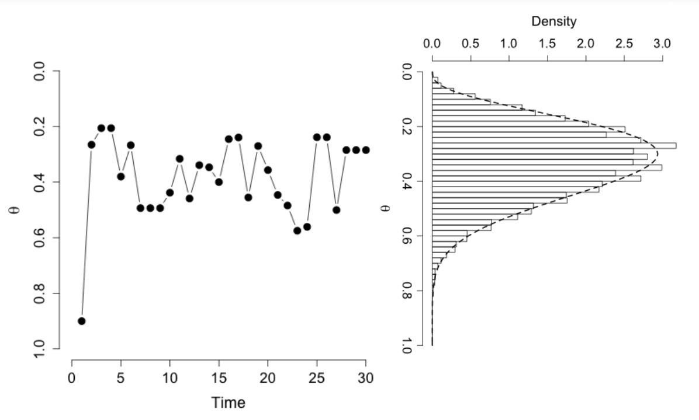
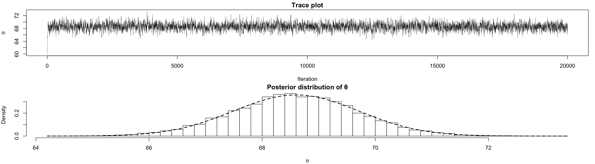

ISI-BUDS 2026
We saw previously that in certain situations, the posterior distribution has a closed form (e.g., when the prior is conjugate), and the integrals are tractable.
For many other problems, however, finding the posterior distribution and obtaining the expectation are far from trivial.
Remember that even for the case of simple normal distribution with two parameters the posterior didn’t have a closed form.
In this lecture, we focus on problems where the posterior distribution is not analytically tractable.
Assume that we are interested in finding integrals of the form \(I = \int_a^b h(x)\,dx\).
If we can draw iid samples, \(x^{(1)}, x^{(2)}, \ldots, x^{(m)}\) uniformly from \((a, b)\), we can approximate this integral as \[\hat{I}_m = (b - a)\frac{1}{m}\bigl[h(x^{(1)}) + h(x^{(2)}) + \cdots + h(x^{(m)})\bigr]\]
Based on the law of large numbers, we know that \[\lim_{m \to \infty} \hat{I}_m = I, \quad \text{with probability 1}\]
And based on the central limit theorem \[\sqrt{m}(\hat{I}_m - I) \to N(0, \sigma^2), \qquad \sigma^2 = \mathrm{Var}(h(x))\]
Now, let’s consider the problem of finding integrals of the form \(\int_{\mathcal{X}} h(x)f(x)\,dx\), where \(f(x)\) is a probability density function. Recall that this integral is in fact \(\mu = E_f(h(x))\), i.e., the expectation of \(h(x)\).
Analogous to the above argument, we can approximate this integral (or expectation) by drawing iid samples \(x^{(1)}, x^{(2)}, \ldots, x^{(m)}\) from the density \(f(x)\) and then \[\hat{\mu} = \frac{1}{m}\bigl[h(x^{(1)}) + h(x^{(2)}) + \cdots + h(x^{(m)})\bigr]\]
For more complex distributions, we can use a Markov chain process to generate samples (which would not be independent anymore) and approximate the target distribution.
This method is known as Markov chain Monte Carlo (MCMC) technique.
Suppose that we are interested in sampling from a distribution \(\pi\) (e.g., with density \(f\), if it is continuous).
Markov chain Monte Carlo is a method where we sample \(x^{(1)}, x^{(2)}, \ldots\) from a Markov chain whose stationary distribution is \(\pi\). We do this mainly by fixing \(\pi\) and finding an appropriate transition probability.
MCMC was first suggested by physicists Metropolis, Rosenbluth, Rosenbluth, Teller and Teller.
Suppose that we are interested in sampling from a distribution \(\pi\). We know the density of \(\pi\) up to a constant, i.e., \(cf(x)\).
We can construct a Markov chain with a transition probability (a.k.a, proposal distribution) \(g(x, y)\) which is symmetric; that is, \(g(x, y) = g(y, x)\).
For example, \(N(x, 1)\) is symmetric since \[\exp\!\left(-\frac{(y-x)^2}{2}\right) = \exp\!\left(-\frac{(x-y)^2}{2}\right).\]
Hastings later on generalized the above algorithm by showing that a symmetrical proposal distribution is not necessary if we change the acceptance probability to \[a(x,y) = \min\!\left(1,\, \frac{f(y)\,g(y,x)}{f(x)\,g(x,y)}\right)\]
We can use a similar procedure as above to show that reversibility (detailed balance) is preserved.

The choice of proposal distribution is important since it determines the speed of convergence to \(\pi\) and the efficiency of sampling.
The proposal distribution could be independent of current state.
For example, we might sample from \(y|x \sim N(0, 100^2)\) regardless of where we are at any given time. Note that this is not a symmetric proposal.
Alternatively, we can use a proposal that depends on our current state.
For example, if at any time we are at point \(x\), we propose our next step by sampling from \(N(x, \delta^2)\).
Recall the univariate normal model with known variance \[y \sim N(\theta, \sigma^2), \qquad P(y|\theta, \sigma) = \prod_{i=1}^n \frac{1}{\sqrt{2\pi}\,\sigma} \exp\!\left[-\frac{(y_i - \theta)^2}{2\sigma^2}\right]\]
We used a conjugate \(N(\mu_0, \tau_0^2)\) prior for \(\theta\), and showed that the posterior distribution, \(P(\theta|y)\), has a closed form and is in fact a normal distribution.
Now let’s not use the closed form and sample from the posterior distribution using a Markov chain.
We can of course write the posterior distribution up to a constant: \[P(\theta|y) \propto \exp\!\left(-\frac{(\theta - \mu_0)^2}{2\tau_0^2}\right) \prod_{i=1}^n \exp\!\left[-\frac{(y_i - \theta)^2}{2\sigma^2}\right] \;=\; f(\theta)\]
To use the Metropolis algorithm, we need a symmetric proposal distribution. Here, we use \(N(\theta^{(i)}, 1)\), which is a normal distribution around our current point, to propose the next step.
We then start from an initial point \(\theta^{(0)}\) and propose the next step \(\theta' \sim N(\theta^{(0)}, 1)\), we either accept this value with probability \(a(\theta^{(0)}, \theta')\), or reject and stay where we are.
We continue these steps for many iterations (see the provided R code for details).
As we can see, the posterior distribution we obtain using the Metropolis algorithm is very similar to the one based on the closed form.

Trace plot and posterior distribution of \(\theta\).